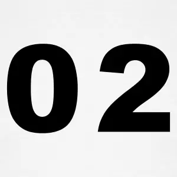
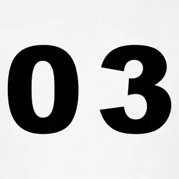

CSS adalah sekumpulan code pemrograman web yang berfungsi untuk mengendalikan beberapa komponen didalam web sehingga menjadi tampak seragam,berstruktur dan teratur.CSS inilah yang bertanggung jawab atas penampilan web anda dimata pengunjung melalui browser interest.

CSS yang buruk bisa membuat visitor Anda tidak kerasan lagi menjelajahi web anda,apalagi untuk kembali lagi. Memaksimalkan CSS adalah penting (khususnya)web agar lebih nyaman untuk dibaca dilihat oleh visitor anda, Jika anda tertarik untuk mengedit tampilan templte web sendiri,maka mengerti CSS adalah wajib.
